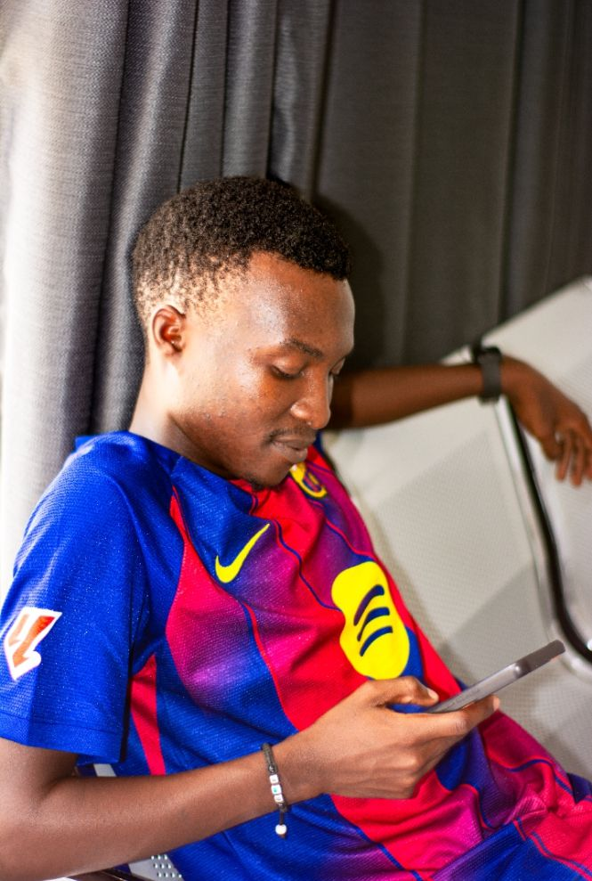

Crio soluções digitais modernas, sistemas inteligentes e websites profissionais que ajudam empresas a crescer.

Sou Engenheiro Informático, com experiência no desenvolvimento de soluções full stack, utilizando linguagens como Java, Python e JavaScript, e frameworks como React, Node.js e Spring Boot. Tenho conhecimentos em bases de dados relacionais (PostgreSQL, MySQL) e não relacionais (MongoDB), versionamento com Git, e boas práticas como REST APIs, testes unitários e metodologias ágeis (Scrum/Kanban).
Gosto de entender o problema antes de escrever uma única linha de código, e procuro sempre equilibrar a solução tecnicamente correta com a simplicidade. Sou curioso por natureza — estou sempre a explorar novas ferramentas, tecnologias e formas de otimizar processos.
Fora do mundo da programação, sou fã de xadrez, café forte e jogos de estratégia. Acredito que a lógica, a criatividade e a disciplina que aplico no tabuleiro e nos jogos também me tornam um melhor engenheiro no dia a dia.
Diagnóstico e reparação de desktops e laptops. Substituição de componentes, limpeza interna, reinstalação de sistemas, remoção de vírus e recuperação de dados.
Configuração de routers, switches, access points Wi-Fi e cablagem estruturada. Criação de redes locais (LAN), controlo de largura de banda e VPN.
Projeto e instalação de câmaras de vigilância (IP ou analógicas HD). Configuração de gravadores, visão noturna, deteção de movimento e acesso remoto.
Proteção de sistemas, redes e dados. Testes de penetração, firewalls, controlo de acessos, encriptação, backups e auditorias de segurança.
Criação de websites modernos, responsivos e otimizados para SEO. Landing pages, lojas online e sistemas personalizados.
Modelagem, otimização e gestão de bases de dados relacionais e não relacionais. Consultas, índices e backups.
Plataforma completa que integra gestão hoteleira com atividades rurais. Reservas, passeios a cavalo, trilhas, controlo de estoque da horta, animais, queijaria e dashboard com indicadores.
Ver Projeto →"Empoderar negócios rurais com tecnologia acessível, simples e poderosa, para que possam crescer sem perder a sua essência."
Ver Projeto →Estruturação semântica e moderna de websites.
Design responsivo, animações e layouts profissionais.
Interatividade e desenvolvimento frontend dinâmico.
Backend, formulários e lógica do servidor.
Gestão e modelagem de bases de dados.
Desenvolvimento de sistemas robustos e escaláveis.
Automação, análise de dados e scripts.
Desenvolvimento de interfaces modernas e componentizadas.